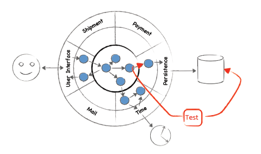

Integration test are meant to test the controllers with their underlying database.
In our case however they use our TaskManager objects. Wich makes them almost like acceptance tests.

Task controller CUD tests